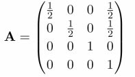

Reflection und Refraction Mapping in OpenGL
Wasser-Spiegel
Spiegelungen und Lichtbrechung von Flüssigkeiten sind für Sie ab jetzt kein Problem mehr. Alles, was Sie benötigen, ist OpenGL und ein wenig Theorie!
Carsten Dachsbacher
Mathematiker hatten viel Arbeit, Wasserwellen auf dem offenen Meer physikalisch zu simulieren (siehe PC Underground, Heft 12/01, S. 246). In dieser Ausgabe beschäftigen Sie sich mit dem Wasser-Rendering im Kleinen: in Flüssigkeitsbehältern. Dabei lernen Sie das so genannte parabolische Reflection- und Refraction-Mapping (Lichtbrechung) kennen. Dieses wenden Sie auf eine kleine Wasseroberfläche an, die sich in einem Behälter befindet.
Bei der Simulation der Wasseroberfläche legen Sie weniger Wert auf die korrekte spektrale Zusammensetzung der Wellen als vielmehr auf eine Fortpflanzung von Wellen und ihrer Reflexion an der Behälterwand.
Berechnung der Wasseroberfläche
Die Wasseroberfläche speichern Sie als ein Gitter aus Vertizes, deren y-Koordinate (die nach oben zeigt) variabel ist. Die x- und z-Koordinaten bleiben konstant. Mit dieser Festlegung simulieren Sie Wasser. Zunächst definieren Sie das Gitter wie in Bitmapeffekten:
#define WATERX 96
#define WATERY 96
typedef struct
{
GLfloat x, y, z;
} VERTEX3D;
VERTEX3D waterHeight[WATERX * WATERY];
// arrays initialisieren
for(y = 0, index = 0; y < WATERY; y++)
for(x = 0; x < WATERX; x++, index++)
{
waterHeight[index].x =
(x - WATERX / 2) / (float)(WATERX / 2);
waterHeight[index].z = (y - WATERY / 2) /
(float)(WATERY / 2);
// standard höhe
waterHeight[index].y = 0.0f;
}
Als Startenenergie verschieben Sie zwei oder mehr Gitterpunkte nach oben:
waterHeight[WATERX + 1].y = 0.5f;
waterHeight[WATERX * (WATERY - 1) - 2].y = 0.5f;
Weiterhin benötigen Sie, um die Wellenfortpflanzung zu berechnen, für jeden Gitterpunkt einen Geschwindigkeits- und einen Kraftvektor. Da Sie nur eine Bewegung in y-Richtung zulassen, beschränken sich die Vektoren auf einen Float-Wert:
float waterVelocity[WATERX * WATERY];
float waterForce[WATERX * WATERY];
Und so berechnen Sie die iterative Animation des Wassers: Aus der Ableitung der waterHeight-Einträge in verschiedenen Richtungen erhalten Sie die Kraftvektoren. Da Sie es mit diskreten Gitterpunktwerten und nicht mit einer kontinuierlichen Funktion zu tun haben, sind die Ableitungen nichts anderes als die Differenzen: Wenn Sie einen Gitterpunkt betrachten, besitzt dieser acht Nachbarpunkte (oben, rechts oben, rechts, rechts unten, usw.). Berechnen Sie jeweils die Differenz zwischen der Höhe des aktuellen Gitterpunkts und der Höhe eines seiner Nachbarn. Das Ergebnis addieren Sie negiert zum Kraftvektor des aktuellen Gitterpunkts und nicht-negiert zum Kraftvektor des Nachbarpunkts. Die Differenz der schrägen Nachbarpunkte multiplizieren Sie mit dem Inversen der Wurzel aus 2.
Der Faktor ergibt sich durch die Annahme, dass die Gitterpunkte eine Längeneinheit voneinander entfernt sind, woraus sich für schräge Nachbarn eine Entfernung von Wurzel 2 ergibt. Exemplarisch für den oberen Nachbarn und den rechten oberen betrachten Sie folgenden Codeteil:
memset(waterForce, 0, sizeof(float) * nVertices);
for(int y = 2; y < WATERY - 2; y++)
for(int x = 2; x < WATERX - 2; x++)
{
float d;
d = waterHeight[x + WATERX * y].y -
waterHeight[x - 1 + WATERX * y].y;
waterForce[x + WATERX * y] -= d;
waterForce[x - 1 + WATERX * y] += d;
d = (waterHeight[x + WATERX * y].y -
waterHeight[x + 1 + WATERX * (y + 1)].y);
d *= INVSQRT2;
waterForce[x + WATERX * y] -= d;
waterForce[x + 1 + WATERX * (y + 1)] += d;
...
}
Nun müssen Sie noch die Geschwindigkeit und die Verschiebungen berechnen. Aus der Physik ist bekannt, dass Sie aus der Kraft durch Integration über die Zeit die Geschwindigkeit und eine weitere Integration darüber die Auslenkung (Verschiebung) erhalten. Die einfachste, aber für diesen Zweck taugliche Methode zu integrieren, lautet:
for(i = 0; i <nVertices; i++)
waterVelocity[i] += waterForce[i] * 0.04f;
for(i = 0; i < nVertices; i++)
waterHeight[i].y += waterVelocity[i];
Damit ist die Simulation der Wasseroberfläche vollständig, und Sie können sich dem Rendering widmen. Dazu greifen Sie tief in die Trickkiste der Computergrafik.
Dual-Paraboloid Environment Mapping
Das Dual-Paraboloid Environment Mapping ist ein relativ neuer Ansatz, um Spiegelungen einer 3D-Szene auf einem Objekt zu visualisieren. Er gestattet es, die gespiegelte 3D-Szene in Texturen festzuhalten und die Spiegelungen auf eine Oberfläche unabhängig von der Betrachterposition zu rendern.
Ein Vorteil gegenüber Spheremapping oder dem Nachteil von Spheremaps ist, dass die Sampling-Rate gleichmäßiger ist. Sie bezieht sich in diesem Fall auf die Fläche auf den Environmentmaps (Sphere oder Dual-Paraboloid), die einem bestimmten Raumwinkel zugeordnet ist. Eine weitere akzeptable Lösung ist das Cube Environment-Mapping, das nur wenige moderne 3D-Beschleuniger unterstützen. Zudem braucht das Verfahren sechs Texturen. Dual-Paraboloid Environment Mapping kommt mit zwei Texturen aus. Diese zwei Texturen enthalten die ganze Umgebung, also die ganze gespiegelte 3D-Szene von einem 3D-Objekt. Dual-Paraboloid Environment Mapping wird allerdings auch nur von relativ neuen 3D-Beschleunigern (nVidia) direkt unterstützt.
DIE PARABOLISCHEN MAPS für vorne und hinten (rechts)
Die Bilder zeigen jeweils eine Spheremap und die entsprechenden Dual-Paraboloid Maps. Jede Farbe steht für einen 90-Grad-Sektor der Umgebung des Objekts. Ein Sektor ist die 3D-Szene vom Objekt aus gerendert, wobei der Kameraöffnungswinkel 90 Grad beträgt. Auffällig ist das schlechte Sampling des gelben Sektors bei den Spheremaps. Die Dual-Paraboloid Maps sind die Bilder von zwei Kameras, die in entgegengesetzter Richtung aufgestellt sind und mit einer speziellen Linse den 180-Grad-Sektor einsehen. Diese Texturen können Sie berechnen, wie der folgende Codeausschnitt an Beispielen einer Front oder Back Map zeigt:
VERTEX3D ray, color, p, pos;
float s, t;
for(j = 0; j < 256; j++)
{
t = 2.0f * ((float)j / 256.0f - 0.5f);
for(i = 0; i < 256; i++)
{
s = 2.0f * ((float)i / 256.0f - 0.5f);
float q = s * s + t * t + 1;
ray.x = 2.0f * s / q;
ray.y = 2.0f * t / q;
ray.z = (q - 2) / q;
pos.x = pos.y = pos.z = 0.0f;
unsigned int color = intersect(pos, ray);
dpMap[i + j * 256 ] = color;
}
}
Die Hauptarbeit dieser Routine verbirgt sich in der Funktion intersect(...). Die Schleife berechnet die Richtungen der Lichtstrahlen, die für einen Texel (Bildpunkt auf einer Textur) auf der Dual-Paraboloid Map verantwortlich sind. Per Raytracing können Sie diesen Strahl verfolgen und die berechnete Farbe in die Map eintragen. Wenn Sie einen eigenen Raytracer geschrieben haben oder einen anderen modifizieren, können Sie damit solche Maps berechnen.

Unser Beispielprogramm beschränkt sich auf eine einfachere Alternative. Die Szene besteht aus einer Skybox, also sechs Würfelseiten, die mit Landschaftstexturen belegt sind. Intersect(...) berechnet damit die Schnittpunkte und liest die entsprechende Farbe aus den Skybox -Texturen aus.
Das Resultat für die Frontparaboloidmap sehen Sie im folgenden Bild. Darin ist schon die ganze Umgebung gespeichert, die sich auf der Wasseroberfläche spiegeln kann. Wie Sie selbst solche Skybox-Texturen berechnen, entnehmen Sie der Textbox auf der nächsten Seite.
Reflection-Mapping in OpenGL
Nicht jede Grafikkarten-Hardware unterstützt das Dual-Paraboloid Environment Mapping. Es muss die GL_REFLECTION_MAP_NV-Erweiterung von OpenGL vorhanden sein, die Sie zu Beginn des Programms testen sollten. Doch dann lassen sich mit OpenGL die Texturkoordinaten s und t für die Environment Maps mit Matrizen aus den Reflection Vektoren berechnen.
Die einzelnen Matrizen sind wie folgt definiert: A ist eine Matrix, die 2D-Koordinaten vom Intervall [-1,1] in das Intervall [0,1] für das Texturemapping transformiert.  Die Matrix P enthält die Projektion eines 3D-Vektors auf 2D.
Die Matrix S subtrahiert den 3D-Vektor von einem Orientierungsvektor d, der die Blickrichtung repräsentiert, also (0,0,1) für die Frontmap oder (0,0,-1) für die Backmap.
Die folgende Matrix ist die Inverse zur Modelview-Matrix von OpenGL.
Die Modelview-Matrix von OpenGL ist eine affine Abbildung (Kombination aus Rotation, Skalierung und Verschiebung), deren inverse Matrix das Beispielprogramm berechnet. Nun müssen Sie OpenGL noch mitteilen, was es mit den Matrizen und Texturen tun soll. Wählen Sie also die entsprechende Textur mit glBind(...) aus, und führen Sie folgenden Code aus, wobei Sie mit Streamdaten (Arrays aus Vertizes und Normalen) rendern:
glEnableClientState(GL_VERTEX_ARRAY);
glVertexPointer(3, GL_FLOAT, 0, &waterHeight[0]);
glEnableClientState(GL_NORMAL_ARRAY);
glNormalPointer(GL_FLOAT, 0, &waterNormal[0]);
// Abbildungsmatrix übergeben
glTexGeni(GL_S, GL_TEXTURE_GEN_MODE, GL_REFLECTION_MAP_NV);
glTexGeni(GL_T, GL_TEXTURE_GEN_MODE, GL_REFLECTION_MAP_NV);
glTexGeni(GL_R, GL_TEXTURE_GEN_MODE, GL_REFLECTION_MAP_NV);
glEnable(GL_TEXTURE_GEN_S);
glEnable(GL_TEXTURE_GEN_T);
glEnable(GL_TEXTURE_GEN_R);
glDrawElements(GL_TRIANGLES, nIndices,
GL_UNSIGNED_INT, waterIndex);
glDisableClientState(GL_VERTEX_ARRAY);
glDisableClientState(GL_NORMAL_ARRAY);
Im obigen Code-Ausschnitt finden Sie zwei bislang unbekannte Arrays:
• waterIndex enthält lediglich die Indizes der zu zeichnenden Dreiecke in der waterHeight-Liste. Diese legt das Programm zu Beginn an.
• waterNormal enthält die Normalen für jeden Gitterpunkt. Diese berechnen Sie gleich nach der Wassersimulation für jeden Frame neu, indem Sie – ähnlich wie bei den Kraftvektoren – Differenzen bilden. Exemplarisch für eine Normale:
n.x = 0.0f;
n.y = 1.0f;
n.z = 0.0f;
n.x += waterHeight[CLAMP(x - 1, y)].y;
n.x -= waterHeight[CLAMP(x + 1, y)].y;
n.z += waterHeight[CLAMP(x, y - 1)].y;
n.z -= waterHeight[CLAMP(x, y + 1)].y;
Der Aufwand für dieses Verfahren hält sich in Grenzen, doch die Ergebnisse sind beeindruckend.
Refraction Mapping
Außer den Spiegelungen, soll unsere Wasseroberfläche Lichtbrechung aufweisen. Dazu gibt es leider keine entsprechende OpenGL-Erweiterung, so dass Sie selbst Hand anlegen müssen. Wenn ein Lichtstrahl aus der Luft ins Wasser eintritt, ändert sich seine Richtung. Die neue Richtung, die nach dem Gesetz von Snell berechnet wird, hängt von der Oberflächennormalen, der ursprünglichen Richtung und der Brechzahl des Mediums (hier Wasser) ab. Sie berechnen das Verfahren, hier gleich in C-Syntax dargestellt, folgendermaßen:
// Kameraposition
float m[16];
glGetFloatv(GL_MODELVIEW_MATRIX, m);
cameraPosition.x = m[2];
cameraPosition.y = m[6];
cameraPosition.z = m[10];
//Richtung Betrachter->Gitterpkt
eyeVector.x = cameraPosition.x -
waterHeight[CLAMP(x, y)];
eyeVector.y = cameraPosition.y -
waterHeight[CLAMP(x, y)];
eyeVector.z = cameraPosition.z -
waterHeight[CLAMP(x, y)];
// Brechzahl
float eta = 0.75f;
dot = n.x * eyeVector.x + n.y *
eyeVector.y + n.z * eyeVector.z;
lambda = sqrt(1 - (eta * eta * (1 - (dot * dot))));
lambda = (eta * dot) - lambda;
refract.x = lambda * n.x - eta * eyeVector.x;
refract.y = lambda * n.y - eta * eyeVector.y;
refract.z = lambda * n.z - eta * eyeVector.z;
Die Richtung der gebrochenen Strahlen sollten Sie zusammen mit den Normalen berechnen.
Es fragt sich, wie Sie von der Richtung des gebrochenen Strahls auf verwertbare Texturkoordinaten kommen und wie die entsprechende Textur aussehen muss.
Die verwendete Textur muss alle Innenwände unseres Gefäßes (hier ein Quader) ausgestalten, weil die Texturkoordinaten für die Eckpunkte eines Dreiecks verschiedene Seitenflächen des Wassercontainers repräsentieren können, aber nur eine Textur gleichzeitig adressierbar ist.
Im Bild sehen Sie an den vier Seiten perspektivisch verzerrt die Texturen der Wände. In der Mitte befindet sich die Boden-Textur. Diese Refractionmap (Wassercontainer) zeichnen Sie per Hand mit einem Bildbearbeitungsprogramm, wobei Sie Beleuchtungseffekte hinzufügen.
Die Texturkoordinaten für die Refractionmap können Sie berechnen, wenn Sie den Aufbau der Map kennen. Zunächst berechnen Sie die Schnittpunkte (soweit vorhanden, in positiver Richtung) des gebrochenen Lichtstrahls mit den Gefäßwänden und speichern die Entfernung:
float MAXV = (float)1e37;
float distance[5] = {MAXV, MAXV, MAXV, MAXV, MAXV };
if(refract.x != 0.0f)
{
distance[0] = vertex.x / -refract.x;
distance[1]= (vertex.x - 1) / -refract.x;
}
if(refract.z != 0.0f)
{
distance[2] = vertex.z / -refract.z;
distance[3] = (vertex.z - 1) / -refract.z;
}
distance[4]=(1 + vertex.y) / -refract.y;
for(c = 0; c < 5; c++)
if(distance[c] < 0)
distance[c] = MAXV;
Anschließend suchen Sie den nächsten Schnittpunkt, der minValue entfernt ist. Der Index des Eintrags ist minDistance. minDistance gibt an, welche Gefäßwand vom Strahl getroffen wurde. Da Sie wissen, welchem Teil der Textur diese Wand entspricht, können Sie den Schnittpunkt mit dieser Wand berechnen und auf den entsprechenden Bereich in der Textur abbilden:
if(minDistance == 4)
{
// boden
vertex.x +=refract.x * minValue;
vertex.y +=refract.y * minValue;
vertex.z +=refract.z * minValue;
u = vertex.x * 0.5f + 0.25f;
v = vertex.z * 0.5f + 0.25f;
} else
{
// seitenwand
vertex.x += refract.x * minValue;
vertex.z += refract.z * minValue;
vertex.y = refract.y * minValue;
float determineV;
if(minDistance & 2)
determineV = vertex.x;
else
determineV = vertex.z;
u = -0.25f * vertex.y;
v = u + determineV * (1 - 2 * u);
if(minDistance & 1)
u = 1 - u;
if(minDistance & 2)
swap(u,v);
}
Die so berechneten Texturkoordinaten speichern Sie für jeden Gitterpunkt im waterTexCoord-Array. Wie sich das Licht im Wasser bricht, zeichnen folgende Zeilen:
glEnableClientState(GL_VERTEX_ARRAY);
glVertexPointer(3, GL_FLOAT, 0, &waterHeight[0]);
glEnableClientState(GL_TEXTURE_COORD_ARRAY);
glTexCoordPointer(2, GL_FLOAT, 0, &waterTexCoord[0]);
glDrawElements(GL_TRIANGLES, nIndices,
GL_UNSIGNED_INT, waterIndex);
glDisableClientState(GL_VERTEX_ARRAY);
glDisableClientState(GL_TEXTURE_COORD_ARRAY);
Wenn Sie Lichtbrechung und Spiegelung kombinieren wollen, zeichnen Sie zuerst die Lichtbrechung und aktivieren anschließend das additive Blending mit
glEnable(GL_BLEND);
glBlendFunc(GL_ONE, GL_ONE);
Dann rendern Sie die Spiegelung. Wenn Sie das Wasser oder die Spiegelung färben möchten, wählen Sie eine entsprechende Farbe und fügen folgende Zeilen vor dem Rendering des Wassers ein:
glColor3ub(r, g, b);
glTexEnvf(GL_TEXTURE_ENV,
GL_TEXTURE_ENV_MODE, GL_MODULATE);